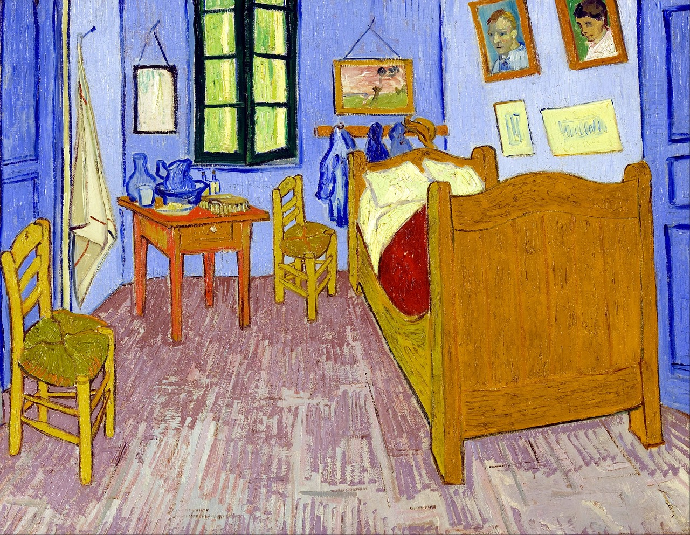
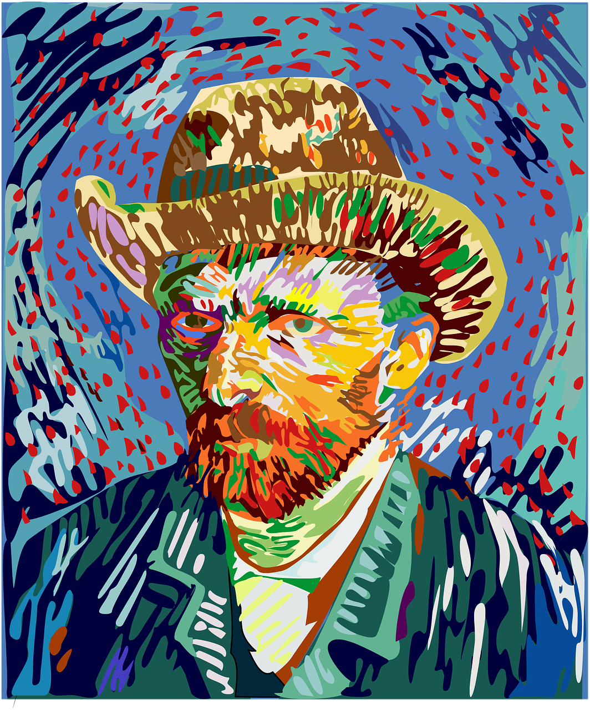
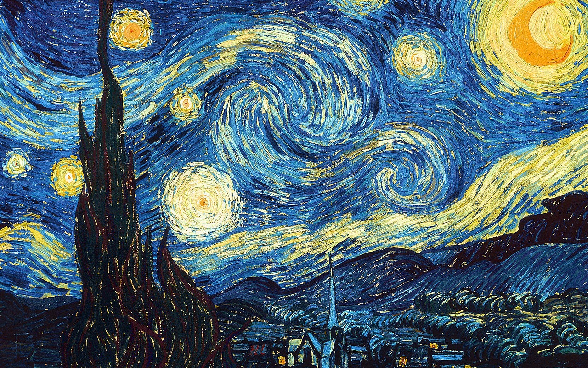
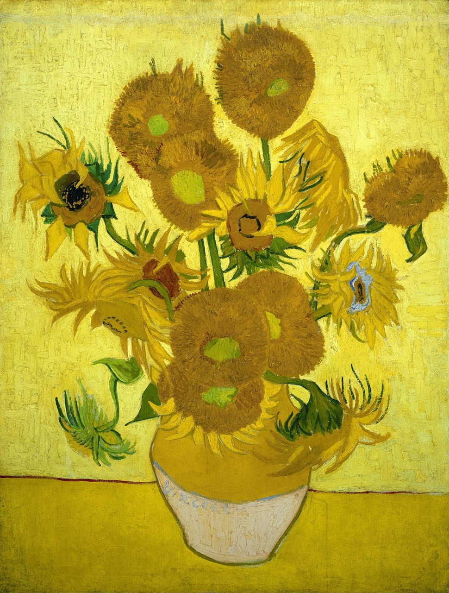

Vincent Van Gogh foi um pintor holandês do final do século XIX e um dos maiores expoentes do pós-impressionismo. Seus trabalhos foram valorizados depois de sua morte e tiveram grande influência na arte do século seguinte.
Van Gogh (1853-1890)

Biografia
Vincent Van Gogh
Vincent Willem van Gogh nasceu em Zundert, na Holanda, no dia 30 de março de 1853. Filho do pastor Theodorus van Gogh e de Ana Cornelius Carbentus, Van Gogh era o primeiro filho de seis irmãos. Desde pequeno teve uma vida difícil, marcada pela pobreza, miséria e doenças. O seu irmão mais novo, Theo, foi uma figura primordial na vida de Van Gogh, uma vez que o ajudou e esteve ao seu lado durante grande parte da vida.
Últimos momentos de Van Gogh
Acometido pela depressão, em maio de 1889, se interna voluntariamente no hospital psiquiátrico Saint-Paul-de-Mausole, na região de Provença, onde permanece por um ano. Mesmo no hospital, não deixou de pintar, atividade que o ajudava a sobreviver diante de tanto sofrimento.
Em 27 de Julho de 1890, falece em circunstâncias duvidosas. A história recorrente é de que Van Gogh teria atirado contra si.
Obras
Van Gogh pintou mais de 400 telas, onde retratou camponeses, a natureza, a miséria e fez autorretratos. Durante a vida, só realizou uma venda. Atualmente, suas obras estão entre as mais caras do mundo.
Quarto em Arles (1888)
Autorretrato com Chapéu de Palha (1888)
A noite estrelada (1889)
Os girassóis (1889)
